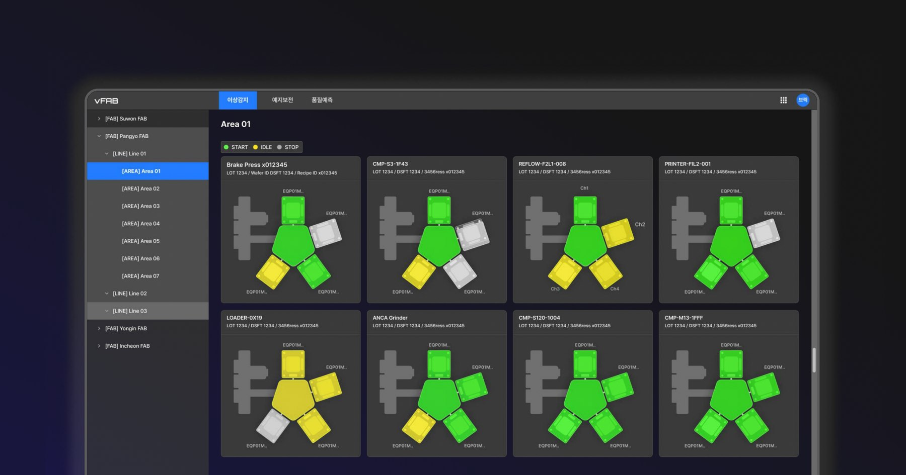
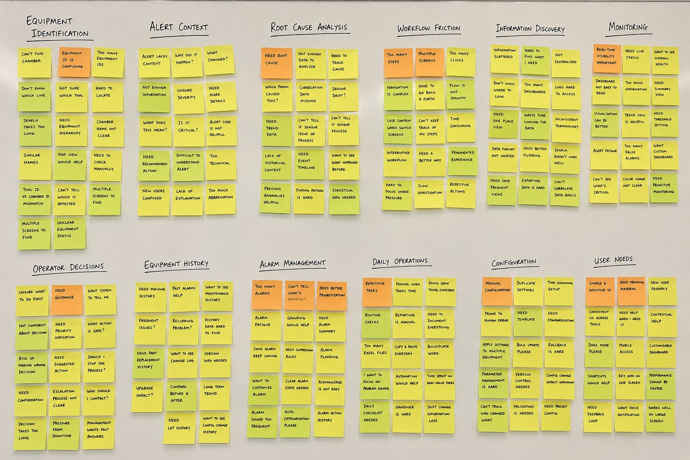
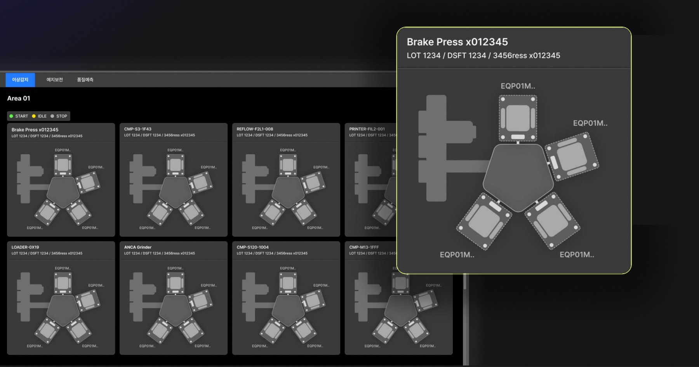
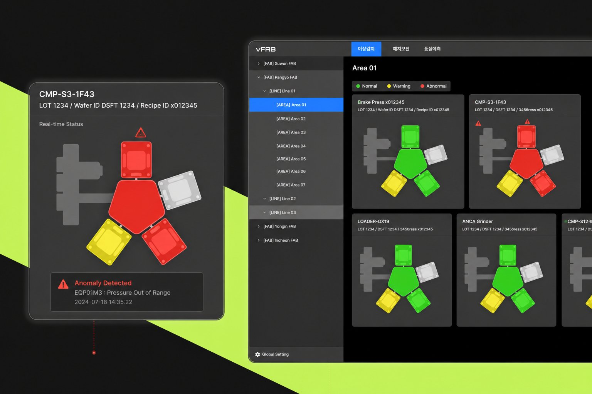
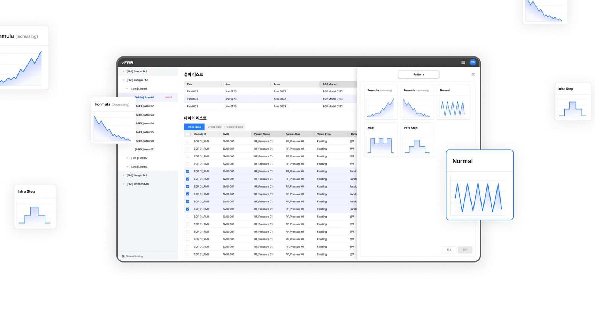
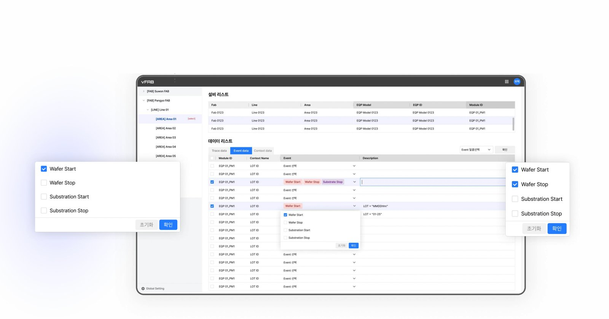
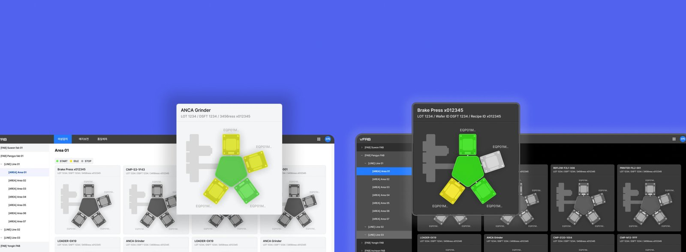

Semiconductor Anomaly Detection Service
An AI-powered monitoring service that helps operators understand equipment anomalies before they become production losses.

I led the design of Semiconductor Anomaly Detection Service end to end, from user research to high-fidelity UI. It's an AI-powered monitoring platform for semiconductor manufacturing. Working closely with data analysts and engineers, I designed a monitoring experience that helps operators quickly find abnormal equipment, understand what caused it, and act with confidence.
Don't just say something is wrong.
Show where, and why.
After an anomaly is detected, the real challenge begins.
Manufacturing systems already generate thousands of real-time alerts and sensor readings every day. Operators still spend valuable time identifying which equipment is affected, locating the exact component, and understanding what caused the issue before taking action.
-
Finding the affected equipment
Operators had to work out which equipment and chamber were affected before they could act. -
Understanding the cause
Alerts told operators something was wrong, but not what changed or why it mattered. -
Piecing information together
Related information lived across separate dashboards, logs, and monitoring screens.


How might we help operators understand an anomaly as quickly as they detect it?
Turn a wall of raw alerts into a clear path to the root cause, so operators can act before production is affected.
Understanding how operators investigate anomalies.
To understand how operators respond to equipment anomalies on the fab floor, I ran user interviews and workflow analysis, and worked closely with domain experts throughout the design process. Rather than tracking what users clicked, I focused on how they made decisions when time mattered and what information they needed most to respond to an equipment fault.

Finding the affected equipment takes too long.
Operators often knew an anomaly had occurred, but identifying the exact equipment or chamber required navigating multiple screens and interpreting complex equipment IDs.
AI detects anomalies, but doesn't provide enough context.
Receiving an alert wasn't enough. Operators needed to understand what changed, why it mattered, and whether immediate action was required.
Critical information is scattered across multiple views.
Investigating a single anomaly required switching between dashboards, logs, equipment information, and monitoring screens. This fragmented workflow increased cognitive load during time-sensitive situations.
Repetitive equipment management slows daily operations.
Routine configuration tasks were repeated across multiple pieces of equipment, increasing manual effort and creating opportunities for human error.

Four hypotheses guided the redesign of the monitoring experience.
I translated the research findings into four testable hypotheses that guided my design decisions before moving into wireframes and prototypes.
Show exactly which part of the equipment, down to the chamber, has the problem, without decoding equipment IDs.
Communicate status through consistent visual indicators.
Bring related information into a single workflow.
Make routine configuration faster with bulk management.
Design Solution
Based on the research findings, I redesigned the monitoring experience to help operators move seamlessly from detection to understanding, and finally to action. Instead of exposing more data, the interface prioritizes the information users need most at the moment an anomaly occurs.
See exactly which part of the equipment is affected.
Operators no longer need to interpret complex equipment IDs or switch between multiple screens. By introducing a visual equipment map based on the real manufacturing environment, the affected chamber can be identified immediately.
I paid close attention to how each equipment card mirrors its real physical layout, going beyond a single alert icon to show exactly which chamber is affected and where it sits on the line.

Make anomaly status instantly recognizable.
Rather than relying on tables and numbers, equipment status is communicated through consistent visual indicators and standardized color semantics. This reduces cognitive load and allows operators to recognize abnormal conditions without reading detailed information.

Keep investigation in a single workflow.
Investigating an anomaly previously required switching between multiple systems. The redesigned workflow consolidates related information into one place, helping operators investigate, verify, and respond without interrupting their flow.

Reduce repetitive operational tasks.
Operators often repeated the same configuration across many machines. I introduced bulk management and simplified configuration flows so routine setup can be applied to multiple machines at once.

Impact
Faster decisions, with more confidence.
By designing around how operators actually investigate, I removed the need to decode equipment IDs or jump between systems. Detection, investigation, and response now happen in one continuous flow, so operators can act with more confidence when time matters.

Reflection
Trust matters more than predictions.
An AI alert is only useful if people trust it. Showing what changed and where, not just that something went wrong, is what turned alerts into decisions. Next time, I'd bring operators into testing earlier to learn how much context they need before they trust an alert.